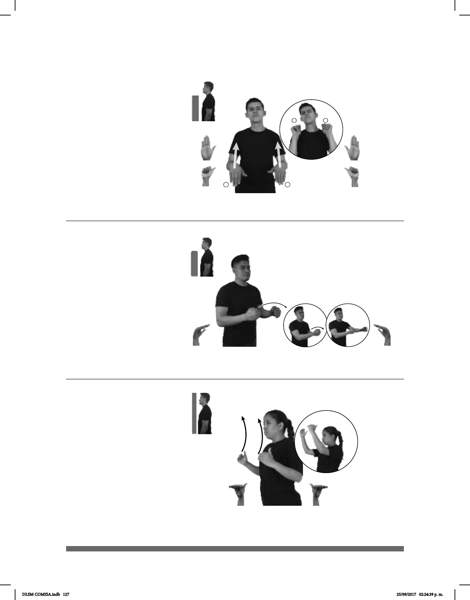

127
(B-P 49)
MAESTRO+MUJER AUSENCIA ALUMNOS SALÓN pro-ELLOS SALIR
En la ausencia de la maestra, los alumnos se salieron del salón.
Seña: SS
Seña que pasa de B-P. 2
a A.1
Palmas hacia abajo.
De la cintura a la altura de los
hombros.
Recto.
Ceño fruncido,
comisuras de los labios hacia abajo,
cuerpo hacia atrás.
sust. f. No estar presente en el
lugar u ocasión en que era de esperarse.
(B-P 51)
(B-P 50)
ESCUELA CONSTRUCCIÓN YA AVANZADA
La construcción de la escuela ya está avanzada.
QUINTO SEMESTRE AVANCES pro-ELLOS ENTREGAR
Se entregaron los avances del quinto semestre.
Seña: SS
B-P.11
Palmas hacia el
centro.
Del pecho a la cabeza.
Las manos se mueven
formando un arco.
Mejillas
adj. Que ha logrado
mayor progreso o desarrollo que el
normal.
Seña: SS
B-P.14
Palmas hacia el centro.
A la altura del pecho.
Las manos se
mueven formando círculos hacia
enfrente alternadamente.
Ceño fruncido,
cuerpo inclinado hacia el frente.
sust. m. Movimiento hacia
adelante de algo o alguien; progreso
alcanzado en algo como la ciencia, la
tecnica, etcétera.
DLSM COMISA.indb 127 25/09/2017 02:24:39 p. m.